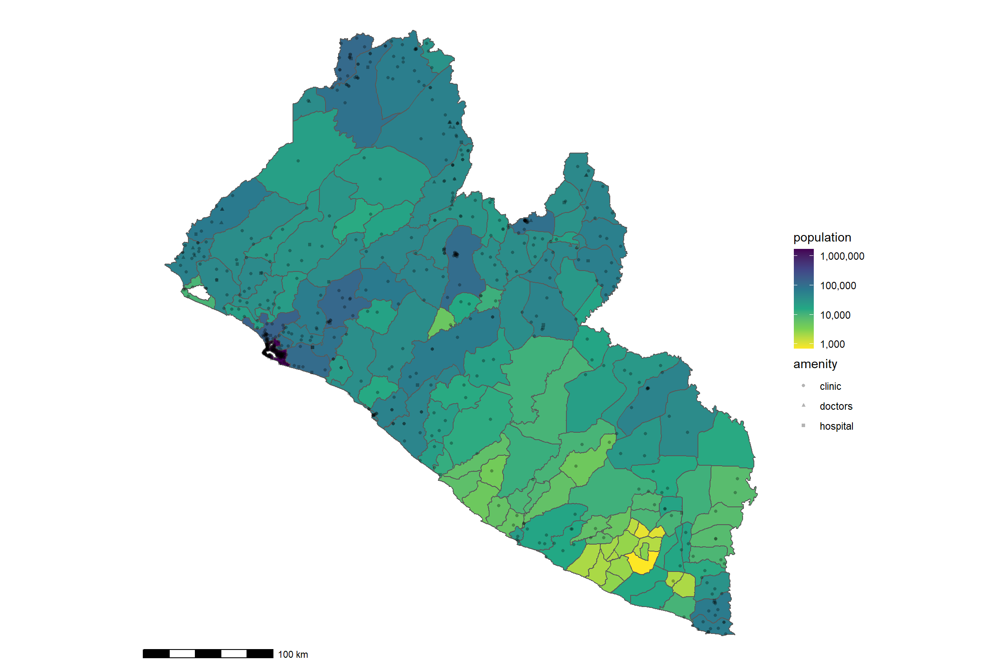
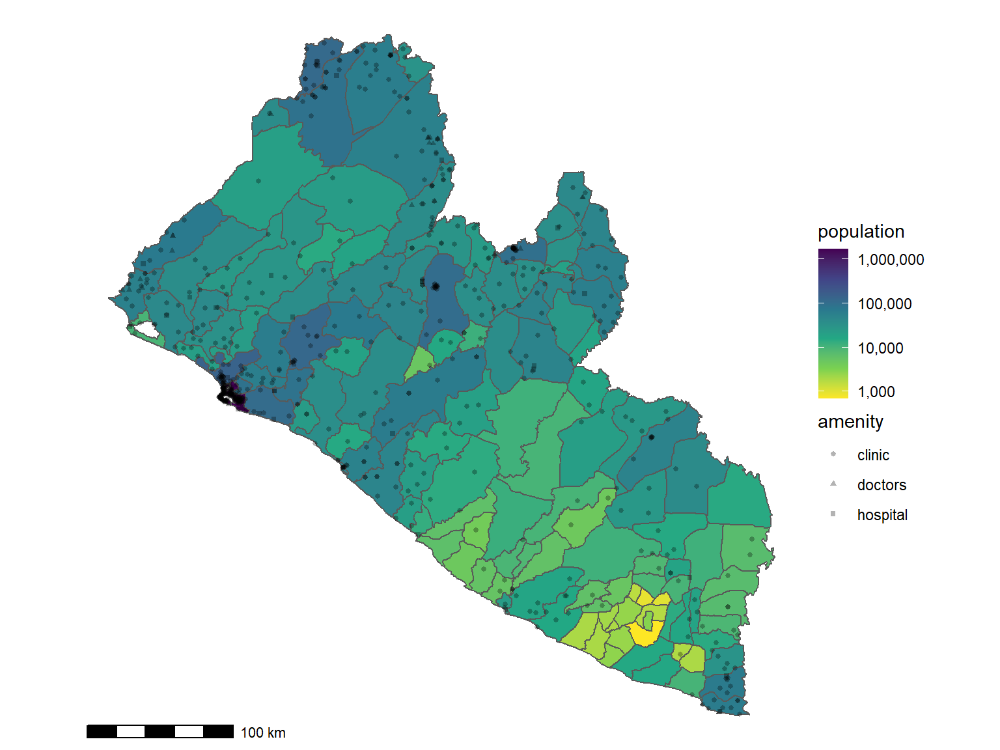
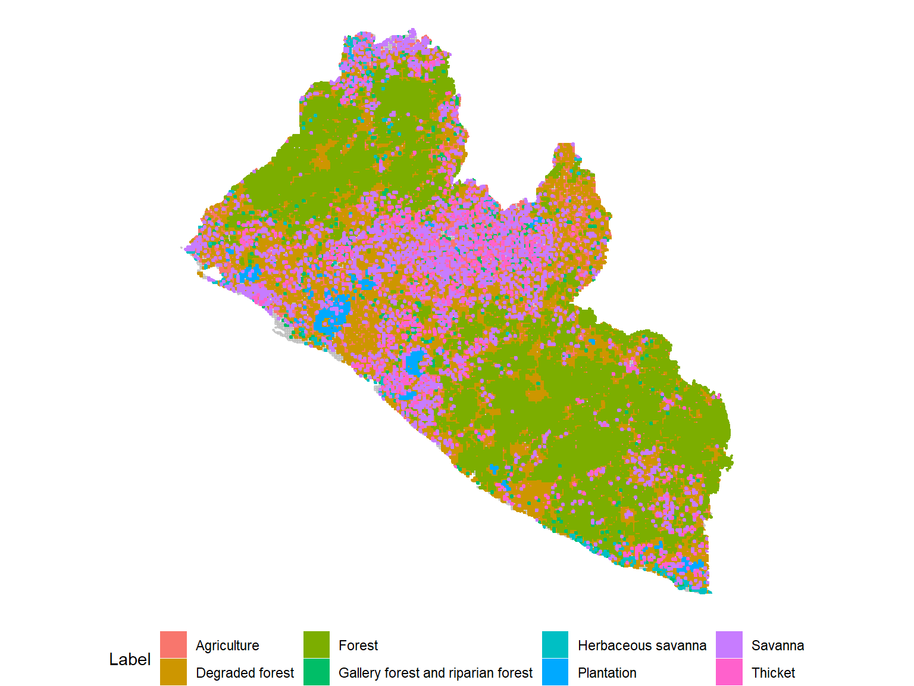

0.5 Appendix
0.5.1 BU
| Authors | Country | Year of survey | Location | Study design | Case ascertainment | Active cases | Sample size | Prevalence per 10 000 population (95% CI) | Quality score |
|---|---|---|---|---|---|---|---|---|---|
| Johnson et al (2005)34 | Benin | 2004 | Lalo commune | Exhaustive preparatory phase followed by validation of suspected cases | Clinical diagnosis following WHO guidelines | 160 | 86 819 | 18·4 (15·7–21·5) | 4 |
| Sopoh et al (2010)29 | Benin | 2006 | Zè district | Exhaustive preparatory phase followed by validation of suspected cases | Clinical diagnosis following WHO guidelines | 222 | 82 450 | 26·9 (23·5–30·7) | 4 |
| Noeske et al (2004)7 | Cameroon | 2001 | Ayos and Akonolinga health districts | Exhaustive survey in convenience sample of communities with suspect cases | Clinical diagnosis, a subset confirmed by PCR or Ziehl-Neelsen staining | 202 | 98 500 | 20·5 (17·8–23·5) | 2 |
| Porten et al (2009)8 | Cameroon | 2007 | Akonolinga district | Exhaustive survey in a random selection of communities | Clinical diagnosis following WHO guidelines, active and total cases reported separately | 56 | 26 679 | 21·0 (15·9–27·3) | 5 |
| Bratschi et al (2013)35 | Cameroon | 2010 | Bankim Health District | Exhaustive survey of health district | Clinical diagnosis, a subset confirmed by PCR | 25 | 48 962 | 5·1 (3·3–7·5) | 3 |
| Kanga (2001)36 | Côte d’Ivoire | 1995 | Côte d’Ivoire | Exhaustive survey of entire country | Suspect cases identified by community health workers, confirmed by clinicians | 4642 | 14 500 000 | 3·2 (3·1–3·3) | 2 |
| Ecra et al (2005)30 | Côte d’Ivoire | 1998 | Zoukoougbeu sub-prefecture | Exhaustive survey of entire sub-prefecture | Nodules detected clinically, Mycobacterium ulcerans confirmed by histopathological analysis | 54 | 47 742 | 11·3* (8·5–14·8) | 3 |
| Mavinga Phanzu et al (2013)31 | Democratic Republic of the Congo | 2008 | Kimpese and Nsona-Mpangu Rural Health Zones | Exhaustive preparatory phase followed by validation of suspected cases | Clinical diagnosis following WHO guidelines, a subset confirmed by PCR | 259 | 237 418 | 10·9 (9·6–12·3) | 6 |
| Amofah et al (1993)32 | Ghana | 1991 | Amansie West district | Exhaustive survey of entire district | Clinical diagnosis, a subset confirmed by Ziehl-Neelsen staining | 90 | 130 000 | 6·9 (5·6–8·5) | 4 |
| Ampah et al (2016)33 | Ghana | 2013 | Ofin River valley | Exhaustive survey in random sample (n=10) and convenience sample (n=3) of communities within 5 km of the Ofin River | Clinical diagnosis in following WHO guidelines, a subset confirmed by PCR | 7 | 20 390 | 3·4 (1·4–7·1) | 6 |
0.5.2 LF
| County | District | lf_raster_mean |
|---|---|---|
| Nimba | Wee-Gbehyi-Mahn | 0.41 |
| Nimba | Zoe-Gbao | 0.41 |
| Nimba | Gbor | 0.40 |
| Nimba | Leewehpea-Mahn | 0.40 |
| Nimba | Twan River | 0.36 |
| Nimba | Meinpea-Mahn | 0.35 |
| Nimba | Boe & Quilla | 0.34 |
| Nimba | Yarpea Mahn | 0.34 |
| Nimba | Buu-Yao | 0.32 |
| Nimba | Garr-Bain | 0.32 |
| Nimba | Gbehlay-Geh | 0.30 |
| Nimba | Sanniquellie Mahn | 0.26 |
| Nimba | Yarwein Mehnsonnoh | 0.25 |
| Nimba | Doe | 0.24 |
| Bong | Boinsen | 0.23 |
| Grand Kru | Felo-Jekwi | 0.23 |
| Bong | Kokoyah | 0.23 |
| Nimba | Kparblee | 0.23 |
| Grand Bassa | Neekreen | 0.22 |
| Grand Bassa | St. John River City | 0.22 |
| Grand Bassa | District #2 | 0.21 |
| Grand Bassa | District #3 | 0.21 |
| Sinoe | Greenville | 0.21 |
| Grand Kru | Nrokwia-Wesldow | 0.21 |
| Bong | Tukpahblee | 0.21 |
| Grand Kru | Upper Jloh | 0.21 |
| Grand Kru | Barclayville | 0.20 |
| Grand Bassa | District #1 | 0.20 |
| Grand Bassa | District #4 | 0.20 |
| Grand Kru | Fenetoe | 0.20 |
| Rivercess | Sam Gbalor | 0.20 |
| Sinoe | Sanquin Dist #2 | 0.20 |
| Sinoe | Sanquin Dist #3 | 0.20 |
| Nimba | Yarmein | 0.20 |
| Grand Kru | Bolloh | 0.19 |
| Sinoe | Butaw | 0.19 |
| Grand Bassa | Commonwealth 2 | 0.19 |
| Margibi | Gibi | 0.19 |
| Grand Kru | Grand Cess Wedabo | 0.19 |
| Bong | Kpaai | 0.19 |
| Grand Kru | Lower Jloh | 0.19 |
| Bong | Panta | 0.19 |
| Grand Kru | Buah | 0.18 |
| Grand Kru | Dorbor | 0.18 |
| Sinoe | Dugbe River | 0.18 |
| Rivercess | Norwein | 0.18 |
| Rivercess | Fen River | 0.17 |
| Grand Kru | Gee | 0.17 |
| Rivercess | Jo River | 0.17 |
| Rivercess | Zarflahn | 0.17 |
| Sinoe | Kpayan | 0.16 |
| Grand Kru | Kpi | 0.16 |
| Grand Bassa | Owensgrove | 0.16 |
| Grand Kru | Bleebo | 0.15 |
| Grand Kru | Garraway | 0.15 |
| Sinoe | Plahn Nyarn | 0.15 |
| Sinoe | Sanquin Dist #1 | 0.15 |
| Rivercess | Beawor | 0.14 |
| Sinoe | Bokon | 0.14 |
| Margibi | Firestone | 0.14 |
| Grand Kru | Forpoh | 0.14 |
| Bomi | Senjeh | 0.14 |
| Grand Kru | Trenbo | 0.14 |
| Grand Kru | Wlogba | 0.14 |
| Sinoe | Bodae | 0.13 |
| Rivercess | Central Rivercess | 0.13 |
| Rivercess | Doedain | 0.13 |
| Margibi | Kakata | 0.13 |
| Grand Cape Mount | Tewor | 0.13 |
| Grand Cape Mount | Garwula | 0.12 |
| Bong | Jorquelleh | 0.12 |
| Sinoe | Juarzon | 0.12 |
| Bomi | Klay | 0.12 |
| Maryland | Whojah | 0.12 |
| Bomi | Dowein | 0.11 |
| Grand Kru | Dweh | 0.11 |
| Grand Cape Mount | Golakonneh | 0.11 |
| Maryland | Gwelekpoken | 0.11 |
| Sinoe | Jaedae | 0.11 |
| Margibi | Mambah Kaba | 0.11 |
| Bong | Salala | 0.11 |
| Sinoe | Wedjah | 0.11 |
| Gbarpolu | Gbarma | 0.10 |
| Nimba | Gbi & Doru | 0.10 |
| Sinoe | Kulu Shaw Boe | 0.10 |
| Grand Cape Mount | Porkpa | 0.10 |
| Bomi | Suehn Mecca | 0.10 |
| Bong | Yeallequelleh | 0.10 |
| Grand Cape Mount | Commonwealth | 0.09 |
| Bong | Fuamah | 0.09 |
| Maryland | Harper | 0.09 |
| Maryland | Karluway #1 | 0.09 |
| Maryland | Karluway #2 | 0.09 |
| River Gee | Nanee | 0.09 |
| Maryland | Pleebo/Sodoken | 0.09 |
| Bong | Zota | 0.09 |
| Gbarpolu | Bopolu | 0.08 |
| Montserrado | Careysburg | 0.08 |
| Montserrado | Todee | 0.08 |
| Montserrado | Commonwealth 1 | 0.07 |
| River Gee | Nyenebo | 0.07 |
| Maryland | Nyorken | 0.07 |
| Montserrado | St. Paul River | 0.07 |
| Grand Gedeh | B’hai | 0.06 |
| Montserrado | Greater Monrovia | 0.06 |
| Sinoe | Jeadepo | 0.06 |
| River Gee | Karforh | 0.06 |
| River Gee | Nyenawliken | 0.06 |
| Bong | Sanoyeah | 0.06 |
| Bong | Suakoko | 0.06 |
| Gbarpolu | Bokomu | 0.05 |
| Grand Gedeh | Gboe-Ploe | 0.05 |
| River Gee | Tuobo | 0.05 |
| River Gee | Gbeapo | 0.04 |
| Gbarpolu | Gounwolaila | 0.04 |
| Sinoe | Pynes Town | 0.04 |
| Sinoe | Seekon | 0.04 |
| Gbarpolu | Kongba | 0.03 |
| River Gee | Sarbo | 0.03 |
| Gbarpolu | Belleh | 0.02 |
| River Gee | Chedepo | 0.02 |
| Grand Gedeh | Gbao | 0.02 |
| River Gee | Glaro | 0.02 |
| River Gee | Potupo | 0.02 |
| Lofa | Salayea | 0.02 |
| Grand Gedeh | Cavala | 0.01 |
| Grand Gedeh | Glio-Twarbo | 0.01 |
| Grand Gedeh | Konobo | 0.01 |
| Grand Gedeh | Putu | 0.01 |
| Grand Gedeh | Tchien | 0.01 |
| Lofa | Vahun | 0.01 |
| Lofa | Zorzor | 0.01 |
| Lofa | Foya | 0.00 |
| Lofa | Kolahun | 0.00 |
| Lofa | Quardu Boundi | 0.00 |
| Lofa | Voinjama | 0.00 |
0.5.3 Population

Figure 13: Estimated population in 2021
0.5.4 District population and health facilities

0.5.5 District population density

0.5.6 Land distribution

0.5.7 Rivers

0.5.8 Bioclimate variables

Cromwell, Elizabeth A, Chris A Schmidt, Kevin T Kwong, David M Pigott, Denise Mupfasoni, Gautam Biswas, Shreya Shirude, et al. 2020. “The Global Distribution of Lymphatic Filariasis, 200018: A Geospatial Analysis.” The Lancet Global Health 8 (9): e1186–94. https://doi.org/10.1016/s2214-109x(20)30286-2.
Mitjà, Oriol, Michael Marks, Diby J P Konan, Gilbert Ayelo, Camila Gonzalez-Beiras, Bernard Boua, Wendy Houinei, et al. 2015. “Global Epidemiology of Yaws: A Systematic Review.” The Lancet Global Health 3 (6): e324–31. https://doi.org/10.1016/s2214-109x(15)00011-x.
Simpson, Hope, Kebede Deribe, Earnest Njih Tabah, Adebayo Peters, Issaka Maman, Michael Frimpong, Edwin Ampadu, et al. 2019. “Mapping the Global Distribution of Buruli Ulcer: A Systematic Review with Evidence Consensus.” The Lancet Global Health 7 (7): e912–22. https://doi.org/10.1016/s2214-109x(19)30171-8.
WHO. 2016. “Global Leprosy Update, 2016: Accelerating Reduction of Disease Burden.” 92. https://www.who.int/publications-detail-redirect/who-wer9235.